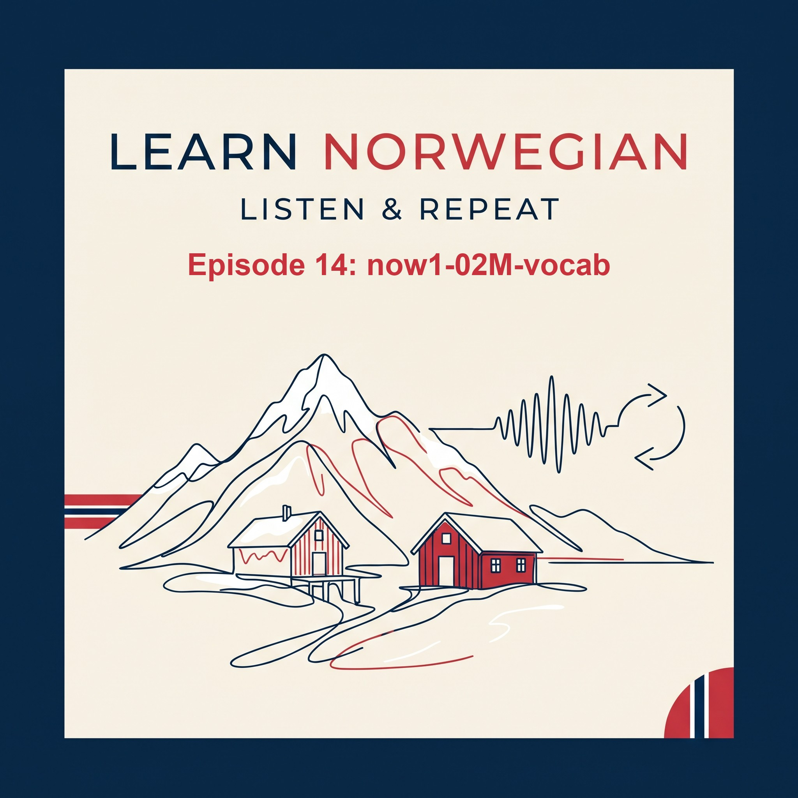
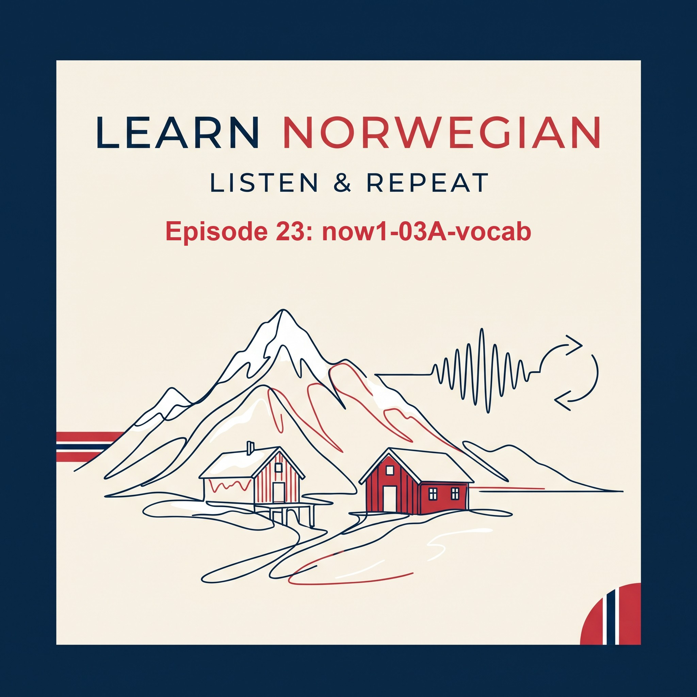
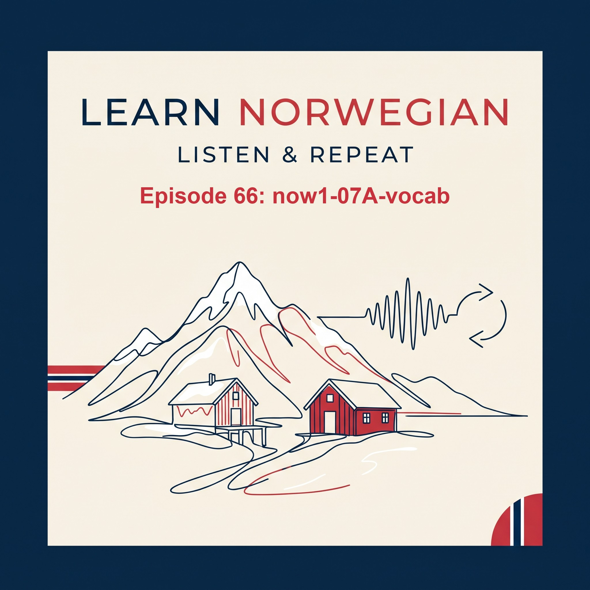

Episode 1 · 13 min
01K · Vocabulary
Vocabulary for chapter 1, text K: 32 words. Listen and repeat them before you start the text lesson.

Listen-and-repeat Norwegian lessons for English speakers. Listen, repeat and speak out loud.
Add this link to any podcast app. Your app remembers where you stopped in each episode.
In other apps (Pocket Casts, Overcast, Castbox, AntennaPod, Podcast Addict) choose “Add by URL” or “Add RSS feed” and paste the link.
Vocabulary for chapter 1, text K: 32 words. Listen and repeat them before you start the text lesson.

Names, where you are from, yes or no questions, family, and talking about another person. Listen, repeat and speak out loud. Do the vocabulary episode first.
Vocabulary for chapter 1, text A: 19 words. Listen and repeat them before you start the text lesson.

Where you are from, work and study, languages, and travelling. Listen, repeat and speak out loud. Do the vocabulary episode first.
Vocabulary for chapter 1, text M: 39 words. Listen and repeat them before you start the text lesson.

Polite questions on a boat, where we are, saying who you are, and greetings. Listen, repeat and speak out loud. Do the vocabulary episode first.
Vocabulary for chapter 1, text P: 29 words. Listen and repeat them before you start the text lesson.

Asking how far, we and you plural, shopping, and paying. Listen, repeat and speak out loud. Do the vocabulary episode first.
Grammar for chapter 1: pronouns, verbs, nouns, small words, question words, word order, and nationalities. Listen and repeat the examples out loud.
Vocabulary for chapter 2, text K: 28 words. Listen and repeat them before you start the text lesson.
Arriving by train, asking for help, addresses, and luggage. Listen, repeat and speak out loud. Do the vocabulary episode first.
Vocabulary for chapter 2, text A: 28 words. Listen and repeat them before you start the text lesson.
Arriving by plane, asking for help, paying, and finding your bus. Listen, repeat and speak out loud. Do the vocabulary episode first.

Vocabulary for chapter 2, text M: 22 words. Listen and repeat them before you start the text lesson.
Telling the time, changing buses, prices and transfers, and finding the reception. Listen, repeat and speak out loud. Do the vocabulary episode first.
Vocabulary for chapter 2, text P: 29 words. Listen and repeat them before you start the text lesson.
Telling the time, finding a place on the map, suggestions, and asking for directions. Listen, repeat and speak out loud. Do the vocabulary episode first.
Vocabulary for chapter 2, text D: 34 words. Listen and repeat them before you start the text lesson.
Introducing a colleague, lunch in the canteen, prices, and paying with Vipps. Listen, repeat and speak out loud. Do the vocabulary episode first.
Grammar for chapter 2: object pronouns, helping verbs, commands, definite nouns, plurals, which, and word order. Listen and repeat the examples out loud.
Vocabulary for chapter 3, text K: 36 words. Listen and repeat them before you start the text lesson.
At the reception: getting the key to your room. Listen, repeat and speak out loud. Do the vocabulary episode first.

Vocabulary for chapter 3, text A: 28 words. Listen and repeat them before you start the text lesson.
The bed-sitter: describing a room. Listen, repeat and speak out loud. Do the vocabulary episode first.
Vocabulary for chapter 3, text M: 21 words. Listen and repeat them before you start the text lesson.
First meeting with Anna: neighbours, music, siblings, and tea. Listen, repeat and speak out loud. Do the vocabulary episode first.
Vocabulary for chapter 3, text P: 36 words. Listen and repeat them before you start the text lesson.
Breakfast with Frank: morning routine, hunger, and food. Listen, repeat and speak out loud. Do the vocabulary episode first.
Vocabulary for chapter 3, text Y: 28 words. Listen and repeat them before you start the text lesson.
Yuhang in Ålesund: studies, feelings, and an invitation. Listen, repeat and speak out loud. Do the vocabulary episode first.
Grammar for chapter 3: it, reflexive verbs, owners, special plurals, adjectives, here and there, and in and on. Listen and repeat the examples out loud.
Vocabulary for chapter 4, text K: 35 words. Listen and repeat them before you start the text lesson.
Ken at the Moholt centre: money, post office, and groceries. Part 1 of 2. Listen, repeat and speak out loud. Do the vocabulary episode first.
Ken at the Moholt centre: money, post office, and groceries. Part 2 of 2. Listen, repeat and speak out loud. Do the vocabulary episode first.
Vocabulary for chapter 4, text A: 26 words. Listen and repeat them before you start the text lesson.
Anna at Solsiden: buying clothes. Listen, repeat and speak out loud. Do the vocabulary episode first.
Vocabulary for chapter 4, text M: 44 words. Listen and repeat them before you start the text lesson.
Maria's shopping trip: interior shop, bookshop, and bakery. Part 1 of 2. Listen, repeat and speak out loud. Do the vocabulary episode first.
Maria's shopping trip: interior shop, bookshop, and bakery. Part 2 of 2. Listen, repeat and speak out loud. Do the vocabulary episode first.
Vocabulary for chapter 4, text P: 20 words. Listen and repeat them before you start the text lesson.
Peter at the police station: registering as a foreigner. Listen, repeat and speak out loud. Do the vocabulary episode first.
Vocabulary for chapter 4, text D: 30 words. Listen and repeat them before you start the text lesson.
Desta goes shopping: food for a dinner with guests. Listen, repeat and speak out loud. Do the vocabulary episode first.
Grammar for chapter 4: this and that, infinitive with å, dropped verbs, adjective patterns, and liten and annen. Listen and repeat the examples out loud.
Vocabulary for chapter 5, text K: 19 words. Listen and repeat them before you start the text lesson.
An old man: a shopping trip in the past tense, and a friendly stranger. Listen, repeat and speak out loud. Do the vocabulary episode first.
Vocabulary for chapter 5, text A: 19 words. Listen and repeat them before you start the text lesson.
Tourist in Trondheim: sights, directions, and helping tourists, in the past tense. Listen, repeat and speak out loud. Do the vocabulary episode first.
Vocabulary for chapter 5, text M: 45 words. Listen and repeat them before you start the text lesson.
E-mail home: a cafe in Bakklandet, Norwegians, and lost bicycle lock. Listen, repeat and speak out loud. Do the vocabulary episode first.
Vocabulary for chapter 5, text P: 25 words. Listen and repeat them before you start the text lesson.
Nidarosdomen cathedral: history, years, and a day with Frank. Listen, repeat and speak out loud. Do the vocabulary episode first.
Vocabulary for chapter 5, text Y: 38 words. Listen and repeat them before you start the text lesson.
Essay: last weekend, in the past tense. Listen, repeat and speak out loud. Do the vocabulary episode first.
Grammar for chapter 5: the past tense, adjectives ending in el and en, looks like, time expressions, and many, some and much. Listen and repeat the examples out loud.
Vocabulary for chapter 6, text K: 25 words. Listen and repeat them before you start the text lesson.
Starting at Dragvoll: the present perfect, campus, and the student ID card. Listen, repeat and speak out loud. Do the vocabulary episode first.
Vocabulary for chapter 6, text A: 20 words. Listen and repeat them before you start the text lesson.
Home from Gløshaugen: what have you done today? Listen, repeat and speak out loud. Do the vocabulary episode first.
Vocabulary for chapter 6, text M: 26 words. Listen and repeat them before you start the text lesson.
The sports centre: hobbies, membership cards, and the student society. Part 1 of 2. Listen, repeat and speak out loud. Do the vocabulary episode first.
The sports centre: hobbies, membership cards, and the student society. Part 2 of 2. Listen, repeat and speak out loud. Do the vocabulary episode first.
Vocabulary for chapter 6, text P: 29 words. Listen and repeat them before you start the text lesson.
Norwegian class: how long, where from, and making friends. Listen, repeat and speak out loud. Do the vocabulary episode first.
Grammar for chapter 6: the present perfect, irregular verbs, auxiliary verbs, the big car, and word order in main and subordinate clauses. Listen and repeat the examples out loud.

Vocabulary for chapter 7, text A: 51 words. Listen and repeat them before you start the text lesson.
Family: talking about relatives in a group. Part 1 of 2. Listen, repeat and speak out loud. Do the vocabulary episode first.
Family: talking about relatives in a group. Part 2 of 2. Listen, repeat and speak out loud. Do the vocabulary episode first.
Vocabulary for chapter 7, text B: 48 words. Listen and repeat them before you start the text lesson.
Spare time: hobbies, sports, and free time. Part 1 of 2. Listen, repeat and speak out loud. Do the vocabulary episode first.
Spare time: hobbies, sports, and free time. Part 2 of 2. Listen, repeat and speak out loud. Do the vocabulary episode first.
Vocabulary for chapter 7, text D: 29 words. Listen and repeat them before you start the text lesson.
Lunch break: family, in-laws, and Easter plans. Part 1 of 2. Listen, repeat and speak out loud. Do the vocabulary episode first.
Lunch break: family, in-laws, and Easter plans. Part 2 of 2. Listen, repeat and speak out loud. Do the vocabulary episode first.
Grammar for chapter 7: possessives, the word som, and the two words for when. Listen and repeat the examples out loud.
Vocabulary for chapter 8, text A: 60 words. Listen and repeat them before you start the text lesson.
Trip to Oppdal: weather, comparing, and a cabin. Part 1 of 2. Listen, repeat and speak out loud. Do the vocabulary episode first.
Trip to Oppdal: weather, comparing, and a cabin. Part 2 of 2. Listen, repeat and speak out loud. Do the vocabulary episode first.
Vocabulary for chapter 8, text B: 46 words. Listen and repeat them before you start the text lesson.
Peter is ill: symptoms, calling the out-of-hours doctor, and medicine. Part 1 of 2. Listen, repeat and speak out loud. Do the vocabulary episode first.
Peter is ill: symptoms, calling the out-of-hours doctor, and medicine. Part 2 of 2. Listen, repeat and speak out loud. Do the vocabulary episode first.
Vocabulary for chapter 8, text Y: 50 words. Listen and repeat them before you start the text lesson.
Cabin trip: packing, seasons, and ice fishing. Part 1 of 2. Listen, repeat and speak out loud. Do the vocabulary episode first.
Cabin trip: packing, seasons, and ice fishing. Part 2 of 2. Listen, repeat and speak out loud. Do the vocabulary episode first.
Grammar for chapter 8: the reflexive possessive sin, comparing adjectives, and time prepositions. Listen and repeat the examples out loud.
Vocabulary for chapter 9, text A: 34 words. Listen and repeat them before you start the text lesson.
The office: a busy day, a birthday cake, and an e-mail to a supervisor. Part 1 of 2. Listen, repeat and speak out loud. Do the vocabulary episode first.
The office: a busy day, a birthday cake, and an e-mail to a supervisor. Part 2 of 2. Listen, repeat and speak out loud. Do the vocabulary episode first.
Vocabulary for chapter 9, text B: 42 words. Listen and repeat them before you start the text lesson.
Conference: preparing a talk, travelling to London, and the hotel. Part 1 of 2. Listen, repeat and speak out loud. Do the vocabulary episode first.
Conference: preparing a talk, travelling to London, and the hotel. Part 2 of 2. Listen, repeat and speak out loud. Do the vocabulary episode first.
Grammar for chapter 9: word order in main and subordinate clauses, because versus therefore, and short answers. Listen and repeat the examples out loud.
Vocabulary for chapter 10, text A: 50 words. Listen and repeat them before you start the text lesson.
A trip to Oslo: sights, a theatre, and museums. Part 1 of 2. Listen, repeat and speak out loud. Do the vocabulary episode first.
A trip to Oslo: sights, a theatre, and museums. Part 2 of 2. Listen, repeat and speak out loud. Do the vocabulary episode first.
Vocabulary for chapter 10, text B: 56 words. Listen and repeat them before you start the text lesson.
Christmas in Norway: church, dinner, traditions, and a phone call home. Part 1 of 2. Listen, repeat and speak out loud. Do the vocabulary episode first.
Christmas in Norway: church, dinner, traditions, and a phone call home. Part 2 of 2. Listen, repeat and speak out loud. Do the vocabulary episode first.
Grammar for chapter 10: the four meanings of så, prepositions of place, and comma rules. Listen and repeat the examples out loud.
These are listening lessons for people learning Norwegian through English. You do not read anything: you listen, repeat and answer out loud.
Based on the free online course Norsk på nett (NOW) from NTNU, the Norwegian University of Science and Technology. Audio and exercises are my own study material; this podcast is not affiliated with or endorsed by NTNU.
Looking for grammar explanations? Visit the Norwegian grammar website.
To get in touch, send a message to this email address:
learnnorwegian[@]outlook.com
Replace [@] with @ when you write.